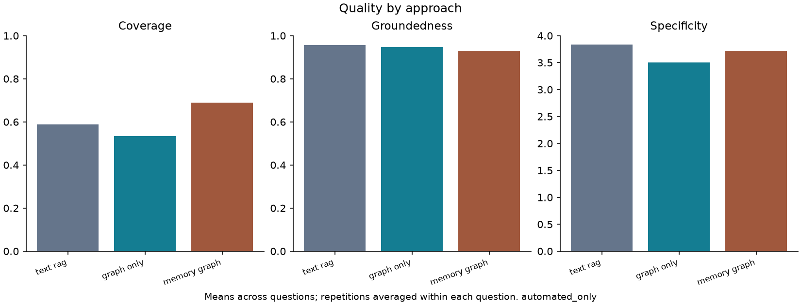
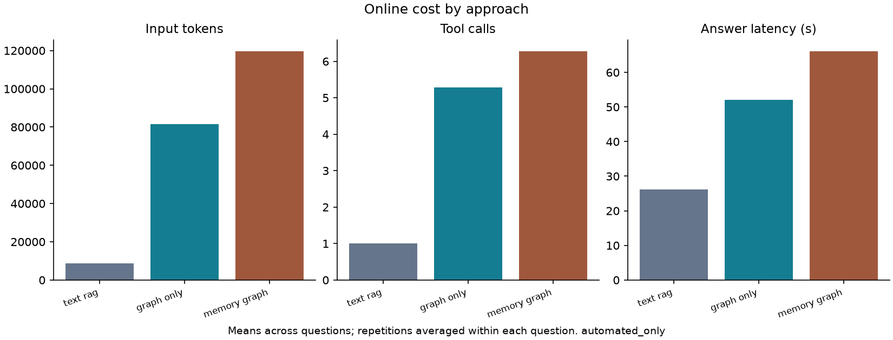

Status: automated_only. Synthetic: False. Reference basis: user_assumption.


| approach | questions | scheduled_runs | finished_runs | failed_runs | judged_runs | fresh_cost_runs | answers_with_grounding_score | coverage | groundedness | specificity | input_tokens | output_tokens | model_calls | tool_calls | latency_seconds |
|---|---|---|---|---|---|---|---|---|---|---|---|---|---|---|---|
| text_rag | 6 | 18 | 18 | 0 | 18 | 18 | 18 | 0.589 | 0.957 | 3.833 | 8807.111 | 1921.556 | 1 | 1 | 26.237 |
| graph_only | 6 | 18 | 18 | 0 | 18 | 18 | 16 | 0.534 | 0.947 | 3.500 | 81608.833 | 2437.222 | 6.389 | 5.278 | 52.113 |
| memory_graph | 6 | 18 | 18 | 0 | 18 | 18 | 17 | 0.689 | 0.930 | 3.722 | 119674.000 | 3303.222 | 7.556 | 6.278 | 66.122 |
| run_id | question_id | approach | variant | status | judged | human_audited | coverage | groundedness | specificity | citation_validity | internal_contradictions | input_tokens | output_tokens | model_calls | tool_calls | latency_seconds | cache_replays | fresh_measurement |
|---|---|---|---|---|---|---|---|---|---|---|---|---|---|---|---|---|---|---|
| pruning__original__graph_only | pruning | graph_only | original | partial | True | False | 0.600 | 1.000 | 4 | 1.000 | 0 | 33910 | 2522 | 4 | 3 | 40.666 | 0 | True |
| pruning__original__text_rag | pruning | text_rag | original | partial | True | False | 0.600 | 0.957 | 4 | 1.000 | 0 | 8189 | 2428 | 1 | 1 | 27.807 | 0 | True |
| pruning__original__memory_graph | pruning | memory_graph | original | partial | True | False | 0.500 | 0.852 | 4 | 1.000 | 1 | 136986 | 4152 | 9 | 8 | 77.254 | 0 | True |
| routines__original__graph_only | routines | graph_only | original | partial | True | False | 0.200 | 1.000 | 4 | 1.000 | 0 | 89385 | 2656 | 7 | 6 | 52.117 | 0 | True |
| routines__original__text_rag | routines | text_rag | original | partial | True | False | 0.100 | 1.000 | 4 | 1.000 | 0 | 7729 | 2043 | 1 | 1 | 39.299 | 0 | True |
| routines__original__memory_graph | routines | memory_graph | original | partial | True | False | 1.000 | 1.000 | 4 | 1.000 | 0 | 121304 | 3736 | 8 | 7 | 67.042 | 0 | True |
| government__original__graph_only | government | graph_only | original | partial | True | False | 0.833 | 1.000 | 4 | 1.000 | 0 | 58920 | 2346 | 6 | 4 | 54.919 | 0 | True |
| government__original__memory_graph | government | memory_graph | original | partial | True | False | 1.000 | 1.000 | 4 | 1.000 | 0 | 35264 | 1848 | 4 | 3 | 27.447 | 0 | True |
| government__original__text_rag | government | text_rag | original | partial | True | False | 0.750 | 1.000 | 4 | 1.000 | 0 | 8934 | 1007 | 1 | 1 | 21.391 | 0 | True |
| data_gaps__original__graph_only | data_gaps | graph_only | original | partial | True | False | 0.900 | 0.833 | 4 | 1.000 | 0 | 155346 | 3816 | 10 | 8 | 80.156 | 0 | True |
| data_gaps__original__memory_graph | data_gaps | memory_graph | original | partial | True | False | 0.900 | 0.846 | 4 | 1.000 | 0 | 139590 | 4105 | 9 | 7 | 80.198 | 0 | True |
| data_gaps__original__text_rag | data_gaps | text_rag | original | partial | True | False | 0.600 | 1.000 | 4 | 1.000 | 0 | 8335 | 1704 | 1 | 1 | 20.191 | 0 | True |
| patterns__original__memory_graph | patterns | memory_graph | original | partial | True | False | 0.800 | 0.933 | 4 | 1.000 | 0 | 153804 | 4774 | 9 | 7 | 88.114 | 0 | True |
| patterns__original__graph_only | patterns | graph_only | original | partial | True | False | 0.400 | 0.833 | 4 | 1.000 | 0 | 77819 | 3225 | 7 | 6 | 73.412 | 0 | True |
| patterns__original__text_rag | patterns | text_rag | original | partial | True | False | 0.400 | 0.931 | 4 | 1.000 | 0 | 8719 | 2820 | 1 | 1 | 28.265 | 0 | True |
| collection_timeline__original__text_rag | collection_timeline | text_rag | original | partial | True | False | 0.929 | 1.000 | 4 | 1.000 | 0 | 11017 | 2065 | 1 | 1 | 23.390 | 0 | True |
| collection_timeline__original__memory_graph | collection_timeline | memory_graph | original | partial | True | False | 0.714 | 1.000 | 4 | 1.000 | 0 | 90184 | 2603 | 6 | 5 | 60.787 | 0 | True |
| collection_timeline__original__graph_only | collection_timeline | graph_only | original | partial | True | False | 0.000 | unknown | 0 | unknown | 0 | 4546 | 147 | 1 | 0 | 5.035 | 0 | True |
| routines__repeat__memory_graph | routines | memory_graph | repeat | partial | True | False | 0.800 | 1.000 | 4 | 1.000 | 0 | 132427 | 3314 | 8 | 7 | 63.113 | 0 | True |
| routines__repeat__text_rag | routines | text_rag | repeat | partial | True | False | 0.100 | 0.900 | 4 | 1.000 | 0 | 7731 | 2237 | 1 | 1 | 25.685 | 0 | True |
| routines__repeat__graph_only | routines | graph_only | repeat | partial | True | False | 0.600 | 0.970 | 4 | 1.000 | 0 | 47579 | 2422 | 5 | 4 | 55.404 | 0 | True |
| pruning__repeat__graph_only | pruning | graph_only | repeat | partial | True | False | 0.800 | 0.955 | 4 | 1.000 | 0 | 56742 | 2829 | 6 | 5 | 63.410 | 0 | True |
| pruning__repeat__memory_graph | pruning | memory_graph | repeat | partial | True | False | 0.600 | 1.000 | 4 | 1.000 | 0 | 156641 | 5428 | 9 | 7 | 87.794 | 0 | True |
| pruning__repeat__text_rag | pruning | text_rag | repeat | partial | True | False | 0.600 | 0.958 | 4 | 1.000 | 0 | 8189 | 2508 | 1 | 1 | 48.028 | 0 | True |
| collection_timeline__repeat__memory_graph | collection_timeline | memory_graph | repeat | partial | True | False | 0.714 | 1.000 | 4 | 1.000 | 0 | 86544 | 2517 | 6 | 5 | 57.807 | 0 | True |
| collection_timeline__repeat__graph_only | collection_timeline | graph_only | repeat | partial | True | False | 0.786 | 1.000 | 4 | 1.000 | 0 | 192801 | 3949 | 10 | 9 | 99.734 | 0 | True |
| collection_timeline__repeat__text_rag | collection_timeline | text_rag | repeat | partial | True | False | 1.000 | 1.000 | 4 | 1.000 | 0 | 11017 | 2129 | 1 | 1 | 21.525 | 0 | True |
| patterns__repeat__graph_only | patterns | graph_only | repeat | partial | True | False | 0.400 | 0.800 | 4 | 1.000 | 0 | 75622 | 2581 | 7 | 6 | 48.985 | 0 | True |
| patterns__repeat__memory_graph | patterns | memory_graph | repeat | partial | True | False | 0.500 | 0.680 | 3 | 1.000 | 0 | 129494 | 3479 | 8 | 7 | 65.580 | 0 | True |
| patterns__repeat__text_rag | patterns | text_rag | repeat | partial | True | False | 0.400 | 0.852 | 3 | 1.000 | 0 | 8719 | 2981 | 1 | 1 | 33.912 | 0 | True |
| government__repeat__graph_only | government | graph_only | repeat | partial | True | False | 0.833 | 1.000 | 4 | 1.000 | 0 | 65822 | 1806 | 6 | 5 | 36.477 | 0 | True |
| government__repeat__text_rag | government | text_rag | repeat | partial | True | False | 0.750 | 1.000 | 4 | 1.000 | 0 | 8934 | 904 | 1 | 1 | 12.070 | 0 | True |
| government__repeat__memory_graph | government | memory_graph | repeat | partial | True | False | 0.000 | unknown | 0 | unknown | 0 | 5648 | 151 | 1 | 0 | 6.380 | 0 | True |
| data_gaps__repeat__text_rag | data_gaps | text_rag | repeat | partial | True | False | 0.600 | 1.000 | 4 | 1.000 | 0 | 8337 | 1603 | 1 | 1 | 31.710 | 0 | True |
| data_gaps__repeat__graph_only | data_gaps | graph_only | repeat | partial | True | False | 0.600 | 1.000 | 3 | 1.000 | 0 | 105258 | 2944 | 8 | 7 | 54.526 | 0 | True |
| data_gaps__repeat__memory_graph | data_gaps | memory_graph | repeat | partial | True | False | 0.900 | 0.857 | 4 | 1.000 | 0 | 123895 | 3233 | 9 | 7 | 78.113 | 0 | True |
| collection_timeline__paraphrase__memory_graph | collection_timeline | memory_graph | paraphrase | partial | True | False | 0.929 | 0.957 | 4 | 1.000 | 0 | 171534 | 3774 | 8 | 7 | 85.781 | 0 | True |
| collection_timeline__paraphrase__text_rag | collection_timeline | text_rag | paraphrase | partial | True | False | 0.929 | 1.000 | 4 | 1.000 | 0 | 9821 | 1622 | 1 | 1 | 32.179 | 0 | True |
| collection_timeline__paraphrase__graph_only | collection_timeline | graph_only | paraphrase | partial | True | False | 0.714 | 1.000 | 4 | 1.000 | 0 | 97083 | 2274 | 7 | 6 | 43.796 | 0 | True |
| routines__paraphrase__memory_graph | routines | memory_graph | paraphrase | partial | True | False | 0.600 | 0.958 | 4 | 1.000 | 0 | 120003 | 3182 | 7 | 6 | 56.924 | 0 | True |
| routines__paraphrase__graph_only | routines | graph_only | paraphrase | partial | True | False | 0.300 | 0.923 | 4 | 1.000 | 0 | 42322 | 1772 | 5 | 4 | 42.310 | 0 | True |
| routines__paraphrase__text_rag | routines | text_rag | paraphrase | partial | True | False | 0.200 | 1.000 | 4 | 1.000 | 0 | 8275 | 1964 | 1 | 1 | 22.323 | 0 | True |
| pruning__paraphrase__graph_only | pruning | graph_only | paraphrase | partial | True | False | 0.600 | 0.923 | 4 | 1.000 | 0 | 155863 | 4097 | 11 | 10 | 84.663 | 0 | True |
| pruning__paraphrase__memory_graph | pruning | memory_graph | paraphrase | partial | True | False | 0.400 | 0.889 | 4 | 1.000 | 0 | 104400 | 2758 | 7 | 6 | 69.593 | 0 | True |
| pruning__paraphrase__text_rag | pruning | text_rag | paraphrase | partial | True | False | 0.400 | 0.800 | 3 | 1.000 | 1 | 7587 | 2217 | 1 | 1 | 27.147 | 0 | True |
| data_gaps__paraphrase__text_rag | data_gaps | text_rag | paraphrase | partial | True | False | 0.600 | 1.000 | 3 | 1.000 | 0 | 8143 | 1039 | 1 | 1 | 12.829 | 0 | True |
| data_gaps__paraphrase__graph_only | data_gaps | graph_only | paraphrase | partial | True | False | 0.000 | unknown | 0 | unknown | 0 | 4544 | 149 | 1 | 0 | 5.813 | 0 | True |
| data_gaps__paraphrase__memory_graph | data_gaps | memory_graph | paraphrase | partial | True | False | 0.900 | 0.889 | 4 | 1.000 | 0 | 179235 | 4005 | 11 | 9 | 82.287 | 0 | True |
| government__paraphrase__graph_only | government | graph_only | paraphrase | partial | True | False | 0.750 | 1.000 | 4 | 1.000 | 0 | 156701 | 1950 | 9 | 8 | 56.674 | 0 | True |
| government__paraphrase__memory_graph | government | memory_graph | paraphrase | partial | True | False | 0.750 | 1.000 | 4 | 1.000 | 0 | 116533 | 2185 | 8 | 7 | 48.790 | 0 | True |
| government__paraphrase__text_rag | government | text_rag | paraphrase | partial | True | False | 0.750 | 1.000 | 4 | 1.000 | 0 | 9145 | 695 | 1 | 1 | 15.760 | 0 | True |
| patterns__paraphrase__graph_only | patterns | graph_only | paraphrase | partial | True | False | 0.300 | 0.900 | 4 | 1.000 | 0 | 48696 | 2385 | 5 | 4 | 39.941 | 0 | True |
| patterns__paraphrase__text_rag | patterns | text_rag | paraphrase | partial | True | False | 0.900 | 0.826 | 4 | 1.000 | 0 | 9707 | 2622 | 1 | 1 | 28.755 | 0 | True |
| patterns__paraphrase__memory_graph | patterns | memory_graph | paraphrase | partial | True | False | 0.400 | 0.880 | 4 | 1.000 | 0 | 150646 | 4214 | 9 | 8 | 87.184 | 0 | True |
| question_id | approach | comparison | supported_facet_jaccard | comparable_pairs | contradictions | contradiction_rate | review_flags |
|---|---|---|---|---|---|---|---|
| routines | memory_graph | repeat | 0.600 | 6 | 0 | 0.000 | [] |
| routines | text_rag | repeat | unknown | 11 | 0 | 0.000 | [] |
| routines | graph_only | repeat | 0.000 | 7 | 0 | 0.000 | ['Left C4 describes a separate Trend Summary tracking gap; its relationship to the network-health trend-analysis practice is unspecified, so it does not establish a contradiction with right C5.', "Right C1's twice-daily Postman routine is distinct from left C1's data-validation routine; matching cadence alone does not make them comparable."] |
| pruning | graph_only | repeat | 1.000 | 9 | 0 | 0.000 | ["Right C8's 'partial order' is ambiguous: identifying workflow stages does not itself establish their chronological order. Its explicit chronology caveat is consistent with left C9."] |
| pruning | memory_graph | repeat | 0.333 | 7 | 0 | 0.000 | [] |
| pruning | text_rag | repeat | 1.000 | 11 | 0 | 0.000 | ['Left C9 and right C7 describe potentially different tokenless workflows or report times; successful rule creation versus blocked Hide/Flag is not an established contradiction.', "Right C12 agrees with the left answer's unnumbered chronology limitations, but those limitations have no supplied claim ID for pairing."] |
| collection_timeline | memory_graph | repeat | 0.800 | 8 | 0 | 0.000 | [] |
| collection_timeline | graph_only | repeat | 0.000 | 0 | 0 | unknown | ['The left answer supplies no claim IDs or substantive incident claims, so no cross-answer propositions can be compared. Its lack of evidence is not a contradiction of the right answer; the empty pair list does not establish consistency.'] |
| collection_timeline | text_rag | repeat | 0.857 | 11 | 0 | 0.000 | [] |
| patterns | graph_only | repeat | 1.000 | 5 | 0 | 0.000 | ['The C2–C6 comparison has different evidentiary modalities: an observed BrightData status-transition bug versus prescribed lifecycle controls.', "Left C3's callback type mismatch and right C3's missing callbacks concern different mechanisms and are not established as the same incident.", "Left C6's Weibo collection-trigger failure and right C4's BrightData connection failure are different events, despite both occurring before processing.", 'Different examples and omissions do not establish contradictions; no directly incompatible propositions were identified.'] |
| patterns | memory_graph | repeat | 0.250 | 4 | 0 | 0.000 | ['The C3–C2 agreement concerns observed staging/production differences and lateness; production scale causing the delay is not established.', 'The C7 comparisons cover only its corresponding narrative subclaims, not its entire synthesis.', 'Left C4 and right C5 describe Weibo initiation and callback failures respectively; a shared platform does not establish the same incident or mechanism.', 'Other collection mechanisms and narrative incidents are different examples, not contradictions. The omitted narrative-statistics claim is not a denial.'] |
| patterns | text_rag | repeat | 1.000 | 12 | 0 | 0.000 | [] |
| government | graph_only | repeat | 0.667 | 3 | 0 | 0.000 | [] |
| government | text_rag | repeat | 1.000 | 4 | 0 | 0.000 | [] |
| government | memory_graph | repeat | 0.000 | 0 | 0 | unknown | ['The right answer supplies no claims to compare with C1–C4. Its unanswered questions and evidence limitation are not contradictions; the empty pair list does not establish consistency.'] |
| data_gaps | text_rag | repeat | 1.000 | 7 | 0 | 0.000 | [] |
| data_gaps | graph_only | repeat | 0.500 | 3 | 0 | 0.000 | ['Left C2 and right C1 agree on upstream responses, but right C1 additionally reports downstream non-ingestion; left C2 does not deny that report.', "Left C1's broader gap report has no directly equivalent right-side claim; the incident-specific claims should not be assumed to describe the same event."] |
| data_gaps | memory_graph | repeat | 1.000 | 4 | 0 | 0.000 | ['Left C4 has no corresponding right-side claim: the right discusses unresolved cursor causality only in its unanswered questions. This is not a contradiction.'] |
| collection_timeline | memory_graph | paraphrase | 0.667 | 7 | 0 | 0.000 | [] |
| collection_timeline | text_rag | paraphrase | 1.000 | 9 | 0 | 0.000 | ["Right C10 agrees with the left answer's unnumbered recovery limitations, but those limitations have no claim IDs and cannot form a claim pair."] |
| collection_timeline | graph_only | paraphrase | 0.000 | 0 | 0 | unknown | ["The right answer supplies no claim IDs or substantive incident claims, so no cross-answer propositions can be compared. Its lack-of-evidence statement does not contradict the left answer's reported timeline; an empty comparison list does not establish consistency."] |
| routines | memory_graph | paraphrase | 0.200 | 6 | 0 | 0.000 | ["Right C7's statement that routine-cadence evidence is absent is potentially ambiguous against left C2's individual vendor-API run. One recorded run does not establish consistent cadence compliance or sustained effectiveness, so this is not a clear contradiction.", 'The other execution examples concern distinct workflows, environments, or events and should not be equated solely because they describe QA or monitoring.'] |
| routines | graph_only | paraphrase | 0.000 | 3 | 0 | 0.000 | ['The monitoring cadences concern differently scoped activities; the supplied evidence does not establish that twice-daily Kepler validation and daily Active Network Stats validation are the same check.', 'The staging reports with different totals concern different dates, not conflicting accounts of one run.'] |
| routines | text_rag | paraphrase | unknown | 0 | 0 | unknown | ['The answers cover distinct monitoring and QA activities; no claims express the same scoped proposition or directly incompatible propositions.', 'Left C7 and right C9 both distinguish Done status from test evidence, but concern different tickets and outcomes.', 'Left C8 and right C8 concern different Narrative defects; the staging image improvement does not contradict the tooltip discrepancy.', 'The differing statements about available cadence and effectiveness evidence refer to different supplied records, not necessarily conflicting histories.'] |
| pruning | graph_only | paraphrase | 0.667 | 7 | 0 | 0.000 | ["Right C9's overall chronology qualification has no directly equivalent left claim; the left's broader chronology qualifications appear in limitations rather than numbered claims.", 'Right C3 describes expected restoration, whereas left C3 describes observed failure; these are not contradictory propositions.'] |
| pruning | memory_graph | paraphrase | 0.500 | 6 | 0 | 0.000 | ["Right C3 calls the implementation statement 'later' without an explicit chronological anchor; this is ambiguous, not a direct contradiction.", 'Left C5 concerns a hover-text retest, whereas right C3 and C4 concern restoration and UI-sync retests; these are different checks.', "Right C8 agrees with the left answer's chronology limitations, but those limitations have no supplied claim IDs for pairing."] |
| pruning | text_rag | paraphrase | 0.333 | 5 | 0 | 0.000 | ['Right C7 says local testing was reported after code completion, but acknowledges that the passages do not establish sequencing. Left C2 makes no ordering claim; this is an ambiguous temporal addition, not a direct contradiction.', 'Left C5 reports failed restoration after rule deletion, whereas right C9 states expected restoration. Observed behavior and a requirement are not contradictory propositions.', "The answers' chronology limitations agree broadly, but the left limitations have no supplied claim IDs and therefore cannot be paired with right C11."] |
| data_gaps | text_rag | paraphrase | 0.333 | 3 | 0 | 0.000 | ['Left C3 and right C6 both concern deduplication defects, but partial updates causing cross-store drift and absent media-field deduplication causing wrong ES data are not established as the same defect or incident.', "The answers' additional explanations and omissions do not establish contradictions; the supplied excerpts do not establish that all reports concern the same incident."] |
| data_gaps | graph_only | paraphrase | 0.000 | 0 | 0 | unknown | ['The left answer supplies no claim IDs, so no claim pairs can be formed.', 'The left reports unavailable source evidence, while the right cites excerpts. This evidence-availability difference cannot establish a contradiction between substantive claims; an empty pair list does not imply perfect consistency.'] |
| data_gaps | memory_graph | paraphrase | 1.000 | 4 | 0 | 0.000 | [] |
| government | graph_only | paraphrase | 0.800 | 3 | 0 | 0.000 | [] |
| government | memory_graph | paraphrase | 0.667 | 3 | 0 | 0.000 | [] |
| government | text_rag | paraphrase | 1.000 | 4 | 0 | 0.000 | [] |
| patterns | graph_only | paraphrase | 1.000 | 6 | 0 | 0.000 | ['Left C2 and right C2 disclaim opposite causal directions; their agreement concerns separate observations and an unestablished causal relationship, not identical directional claims.', "Right C4 qualifies temporary service unavailability as possible; this does not contradict left C4's reported connection failures.", 'The additional access, batch-lifecycle, duplicate-ID, record-mismatch, statistics, and backlog examples concern distinct mechanisms or events; their omission from the other answer is not a contradiction.'] |
| patterns | text_rag | paraphrase | 0.250 | 7 | 0 | 0.000 | ['Claim IDs repeat across sides; pair fields identify the left and right namespaces.', 'Duplicate-post-ID callback issues, missing Weibo callbacks, and missing SQS notifications cannot be equated solely from similar coordination symptoms.', 'Collection queue blockage from unfinished video-vision steps is not established as the same mechanism as narrative timeout retries or hanging SQS tasks.', 'Staging topic-clustering errors and separately reported comment-narrative Algorithm Errors lack a demonstrated shared event or cause.', "The Argonaut report's later alarms do not contradict the absence of alerts during the initially silent retry loop."] |
| patterns | memory_graph | paraphrase | 0.000 | 2 | 0 | 0.000 | ['The timeout reports use different scope descriptions; their shared timeout mechanism agrees, but identical incident identity is not established.', 'Other claims concern different incidents or mechanisms, not incompatible accounts of the same event.', "The left's omission of narrative-statistics evidence does not contradict the right's claim C7; it states an evidence limitation rather than denying missing statistics."] |
Reliability was an abstraction theme; April incidents were development examples.
# Which processing failure modes recur across narrative generation and collection, and where do the mechanisms differ? Status: partial - **C1.** Across the records, processing can fail before output is produced, but the cited mechanisms span execution, coordination, data integrity, and collection dependencies rather than one common cause. Sources: KEP-3912, KEP-4243, KEP-6923, KEP-6969. Route: `text`. Confidence: **medium** — This is a comparison of distinct records, not evidence of a shared root cause. - `ev_5f2b2e2ded8842f5` [0:196]: Root cause: narrative generation jobs for this network were repeatedly running beyond the processing time SLA threshold (10 hours at the time) and being killed by the application before completing - `ev_8377265b8fad614c` [0:100]: Investigate the tasks where we did not receive SQS Notifications making the tasks stay in hang state - `ev_fe9edd081c5bc41d` [0:100]: This mismatch causes an inconsistent data state, resulting in a KeyError exception during processing - `ev_0c852a6941b0f4d8` [0:49]: Funding / quota exhaustion stops data collection. - **C2.** For one Argonaut-tenant government customer network, narrative-generation jobs reportedly exceeded a 10-hour processing threshold and were killed before completion. Sources: KEP-6969. Route: `text`. Confidence: **high** — The record directly names the network and reports the timeout mechanism. - `ev_5f2b2e2ded8842f5` [0:196]: Root cause: narrative generation jobs for this network were repeatedly running beyond the processing time SLA threshold (10 hours at the time) and being killed by the application before completing - `ev_1c1739cdda90321d` [0:174]: A government customer network in the Argonaut tenant (network_id: ca95298f-cb34-5119-b8f9-e447607dfab7) stopped generating narrative updates from approximately April 19, 2026 - **C3.** That job reportedly re-queued after termination, creating a silent retry loop with no output or alert. Sources: KEP-6969. Route: `text`. Confidence: **high** — The passage directly describes the loop. - `ev_1b68761b66cc3cc3` [0:110]: The same job would then re-queue and be killed again, creating a silent retry loop with no output and no alert - **C4.** A separate investigation describes missing SQS notifications leaving tasks in a hanging RUNNING state; it also calls for investigation of comment-narrative Algorithm Errors. Sources: KEP-3912. Route: `text`. Confidence: **medium** — The investigation text names both symptoms but does not establish that they share a cause. - `ev_d9db300b6974ef3b` [0:183]: Investigate the tasks where we did not receive SQS Notifications making the tasks stay in hang state (i.e. RUNNING) Investigate the failure of the comment narratives (Algorithm Error) - **C5.** In staging, topic-clustering jobs were reported to fail with an algorithmic error despite completed data collection for active networks. Sources: KEP-2189. Route: `text`. Confidence: **high** — Both observations are directly reported for the staging work. - `ev_ae8831731edc8c8f` [0:64]: Data collection is completed for all active networks in staging. - `ev_dcd6b5f9b30344e7` [0:85]: There a re failures in the topic clustering with algorithmic error for 18 jobs out of - **C6.** Narrative Graph API processing reportedly raised a KeyError when Network Trigrams contained macro_ids absent from Macro Narratives. Sources: KEP-4243. Route: `text`. Confidence: **high** — The record directly describes the mismatch and exception. - `ev_857bba204521b877` [0:116]: Records with macro_ids exist in the Network Trigrams collection but are missing from the Macro Narratives collection - `ev_fe9edd081c5bc41d` [0:100]: This mismatch causes an inconsistent data state, resulting in a KeyError exception during processing - **C7.** A report-generation issue produced failures or refusal responses, particularly with Azure models or sensitive-topic prompts; content filtering was suggested, not confirmed, as the mechanism. Sources: KEP-6760. Route: `text`. Confidence: **medium** — The output behavior is reported directly, while the proposed mechanism is qualified as apparent. - `ev_78270a30fb9ad835` [0:176]: report generation fails or returns 'I'm sorry I cannot assist with that request' responses, particularly when using Azure models or specific prompts related to sensitive topics - `ev_4722c9e12ee05946` [0:100]: This appears to be related to OpenAI/Azure content filtering and handling of large-scale generation. - **C8.** For collection, the dependency-risk list names funding or quota exhaustion, rate limits, and vendor or service outages as distinct ways data flow can be interrupted. Sources: KEP-6923. Route: `text`. Confidence: **high** — These modes are explicitly listed. - `ev_0c852a6941b0f4d8` [0:49]: Funding / quota exhaustion stops data collection. - `ev_a968798c28c0d7d6` [0:16]: Rate‑limit hits. - `ev_1dba2fdf457f30b3` [0:45]: Vendor / service outage not detected quickly. - **C9.** A BrightData batching proposal targets rate limiting by grouping requests; its retry cap and throughput target are requirements, not demonstrated collection outcomes. Sources: KEP-7025. Route: `text`. Confidence: **medium** — The passages express a goal and requirements, not measured results. - `ev_e5585e8d13c80e28` [0:113]: The goal is to reduce rate limiting issues and improve data collection efficiency by grouping requests in batches - `ev_9337c1379bb2a44f` [0:64]: Backoff logic should not exceed 3 retries within a 24-hour cycle - `ev_a7c43f25cd6ac0ad` [0:61]: Should maintain processing speed of at least 5,000 users/hour - **C10.** The pipeline-risk list also distinguishes upstream model crashes, partial network-level failures, release-related narrative-accumulation regressions, and report-generation failures. Sources: KEP-6923. Route: `text`. Confidence: **high** — The source explicitly lists these as different pipeline failure modes. - `ev_db0c75ab2fb11e09` [0:54]: Pipeline model crashes → everything downstream breaks. - `ev_3d078a483bf0ab14` [0:57]: Partial network‑level failures (NE, NH, Influence, etc.). - `ev_82fb7c9fc0071447` [0:65]: Release‑related regressions (e.g., narrative‑accumulation issue). - `ev_1ac3a7fb42bdf536` [0:47]: Report‑generation failures (no regular QA run). - **C11.** Missing service callbacks are separately flagged as a Weibo processing failure, resembling the missing-notification symptom but not establishing the same underlying mechanism. Sources: KEP-3912, KEP-6650. Route: `text`. Confidence: **medium** — Both passages concern missing completion signals, but the Weibo evidence is only a title. - `ev_adb482ae008cdf13` [0:61]: Critical Weibo Processing Failures: Missing Service Callbacks - `ev_8377265b8fad614c` [0:100]: Investigate the tasks where we did not receive SQS Notifications making the tasks stay in hang state ## Unanswered - Whether the proposed missing-macro_id handling, BrightData batching, or notification and callback fixes were deployed and effective. - How frequently each failure mode occurred across tenants or environments beyond the cited cases and risk list. - The root cause of the staging algorithmic errors and whether the Weibo callback issue involved SQS. ## Limitations - The passages mix incident reports, investigation requests, a risk catalogue, and implementation requirements; they are not a uniform incident sample. - The staging topic-clustering count is truncated, and no failure rate can be inferred. - BM25 over extracted record text; exact citations do not establish semantic correctness.
# Which processing failure modes recur across narrative generation and collection, and where do the mechanisms differ? Status: partial - **C1.** Long-running narrative-generation jobs were repeatedly killed after exceeding a 10-hour processing SLA; the record attributes this to large network data volumes. Sources: KEP-6969. Route: `graph`. Confidence: **high** — The source directly reports the failure and its attributed mechanism. - `ev_f3dba2eba43e2de5` [0:180]: Narrative generation jobs for networks with large data volumes (long-running networks) were being terminated by the application upon exceeding the processing SLA timeout (10 hours) - `ev_5f2b2e2ded8842f5` [0:196]: Root cause: narrative generation jobs for this network were repeatedly running beyond the processing time SLA threshold (10 hours at the time) and being killed by the application before completing - **C2.** Another narrative-side report combines missing SQS notifications, tasks left RUNNING, and comment-narrative algorithm errors; it does not establish that the algorithm errors caused the missing notifications. Sources: KEP-3912. Route: `graph`. Confidence: **high** — Both observations are directly stated, while their causal relationship is not. - `ev_d9db300b6974ef3b` [0:183]: Investigate the tasks where we did not receive SQS Notifications making the tasks stay in hang state (i.e. RUNNING) Investigate the failure of the comment narratives (Algorithm Error) - **C3.** Collection likewise has lost completion or failure signals: Weibo processing is reported with missing service callbacks, and failed Video-Summary tasks are reported not to trigger callbacks. Sources: KEP-2175, KEP-6650. Route: `graph`. Confidence: **medium** — Two source reports support a recurring signal-loss pattern, but concern distinct workflows. - `ev_adb482ae008cdf13` [0:61]: Critical Weibo Processing Failures: Missing Service Callbacks - `ev_90b8b0d6052b3676` [0:100]: Callbacks missing for failure cases Callbacks are not being triggered when Video-Summary tasks fail. - **C4.** A collection-specific failure occurred before BrightData jobs could be created: calls to its batching service sometimes received connection-refused errors, with no retry mechanism reported for those network failures. Sources: KEP-5076. Route: `graph`. Confidence: **high** — The source directly identifies the connection error and reported retry gap; possible service-unavailability causes remain qualified. - `ev_3d5d2f47d4a972e3` [0:398]: While creating BrightData batching jobs, the system occasionally fails with a connection error when calling the BrightData batching service: HTTPConnectionPool(host='brightdata-batching-service.kepler.svc.cluster.local', port=12000): Max retries exceeded with url: /brightdata-batching/jobs/create (Caused by NewConnectionError: Failed to establish a new connection: [Errno 111] Connection refused) - `ev_91a620eacb16c78c` [0:264]: BrightData batching service may be temporarily unavailable (pod restart, rollout, scaling). No retry mechanism exists for connection refused / network-level failures . Causes: Unnecessary task failures Missed BrightData job creation Inconsistent ingestion behavior - **C5.** Another collection-specific mechanism was upstream access failure: YouTube YTDLP downloads reportedly hit high rates of 403 errors when SmartProxy blocked requests, degrading collection. Sources: KEP-6971. Route: `graph`. Confidence: **high** — The source reports the failure and attributed access mechanism; it does not verify recovery after migration. - `ev_c7511760bf9c6367` [0:392]: YouTube video download jobs using the YTDLP library were failing with high rates of 403 errors due to SmartProxy (SPA) blocking requests. This degraded YouTube data collection over approximately the same window as the broader FB/IG/TikTok outage (from ~Apr 21), and was confirmed separately by Austin Noronha on April 28. The fix was to migrate YouTube downloads from SmartProxy to Brightdata - **C6.** BrightData collection also had a batch-lifecycle risk distinct from narrative compute timeout: the proposed safeguards call for reconciling batches stuck in sent status and making callback or retry updates idempotent. Sources: KEP-2175, KEP-5668. Route: `graph`. Confidence: **medium** — The null batch ID is reported, but the lifecycle controls are prescribed rather than verified as implemented. - `ev_5735a7f1cf387d96` [0:74]: Inconsistent batch_id presence In some failure scenarios, batch_id is null - `ev_6be1916061f01606` [0:340]: Correct Batch Lifecycle Handling Ensure robust status transitions from sent → completed (and any other relevant states), including: Handling of retries / callbacks from Bright Data. Idempotent updates to avoid inconsistent states. Stale Batch Detection & Recovery Add logic to detect batches stuck in sent beyond a configurable time window. - **C7.** Thus the recurring pattern is interrupted or unacknowledged asynchronous processing, but the documented mechanisms differ: narrative work can exceed an application SLA or fail algorithmically, whereas collection can fail at external access, service connection, callback, or batch-state boundaries. Sources: KEP-3912, KEP-5076, KEP-6650, KEP-6969, KEP-6971. Route: `graph`. Confidence: **medium** — This is a cross-record comparison, not a claim that all systems share one root cause. - `ev_f3dba2eba43e2de5` [0:180]: Narrative generation jobs for networks with large data volumes (long-running networks) were being terminated by the application upon exceeding the processing SLA timeout (10 hours) - `ev_d9db300b6974ef3b` [0:183]: Investigate the tasks where we did not receive SQS Notifications making the tasks stay in hang state (i.e. RUNNING) Investigate the failure of the comment narratives (Algorithm Error) - `ev_c7511760bf9c6367` [0:137]: YouTube video download jobs using the YTDLP library were failing with high rates of 403 errors due to SmartProxy (SPA) blocking requests. - `ev_3d5d2f47d4a972e3` [0:140]: While creating BrightData batching jobs, the system occasionally fails with a connection error when calling the BrightData batching service: - `ev_adb482ae008cdf13` [0:61]: Critical Weibo Processing Failures: Missing Service Callbacks ## Unanswered - Whether the proposed batch-lifecycle controls were deployed and effective. - Whether the reported collection and narrative failures produced measured customer impact or share any single root cause. ## Limitations - The cited records cover distinct systems and workflows; recurrence means analogous failure modes in this selected evidence, not measured prevalence. - Reported fixes and prescriptions do not by themselves verify recovery or deployment. - Citation validation checks source access and exact provenance, not semantic entailment or real-world truth.
# Which processing failure modes recur across narrative generation and collection, and where do the mechanisms differ? Status: partial - **C1.** A reported narrative-generation failure repeatedly killed jobs after a 10-hour timeout and re-queued them without output or an alert. Sources: KEP-6969. Route: `memory_confirmed_by_graph`. Confidence: **high** — The incident passages directly report the timeout and retry loop. - `ev_5f2b2e2ded8842f5` [0:196]: Root cause: narrative generation jobs for this network were repeatedly running beyond the processing time SLA threshold (10 hours at the time) and being killed by the application before completing - `ev_1b68761b66cc3cc3` [0:110]: The same job would then re-queue and be killed again, creating a silent retry loop with no output and no alert - **C2.** A collection outage was attributed instead to video-vision jobs failing to close final steps, backing up the queue and preventing new jobs from starting. Sources: KEP-6970. Route: `graph`. Confidence: **medium** — This is the source-reported cause, not independently verified recovery. - `ev_9488fa8cc6db3d39` [0:168]: Root cause identified and fixed: video vision processing jobs were not closing their final steps properly, causing a queue backup that prevented new jobs from starting. - **C3.** A separate narrative report described micro- and macro-narrative UI data appearing hours late; it reported success with 4–7 staging networks but failure with roughly 200 or more production networks. Sources: KEP-6189. Route: `memory`. Confidence: **medium** — The reports establish lateness and an environment contrast, but not that scale caused the delay. - `ev_78b67c045ef5dda3` [0:59]: UI data for micro‑ and macro‑narratives appears hours late. - `ev_0aa92eb7859f3f5e` [0:91]: The pipeline works fine in staging (4‑7 networks) but fails in production (~200+ networks). - **C4.** Collection can fail at initiation: a Weibo report says network creation succeeded without date validation, but collection was not triggered for any source in that network. Sources: KEP-6777. Route: `graph`. Confidence: **high** — The passage directly reports setup success and absent collection triggering. - `ev_ab3e2ef2efebc39d` [0:131]: Network gets created successfully without date validation for Weibo. No data collection is triggered for any sources in the network - **C5.** A report describes severely degraded or failing Facebook, Instagram, and TikTok collection over an approximate interval, with no automated alarm firing during that period. Sources: KEP-6970. Route: `graph`. Confidence: **medium** — The passages support degraded collection and missed detection, but not a platform-specific cause or completed recovery. - `ev_75b67275157f9120` [0:137]: From approximately April 21 through April 29, 2026, data collection for Facebook, Instagram, and TikTok was severely degraded or failing. - `ev_06eee086b8cf9d93` [0:43]: No automated alarm fired during this period - **C6.** Missing downstream narrative data had another reported mechanism: Network Trigrams held macro_ids absent from the Macro Narratives collection. Sources: KEP-4243. Route: `graph`. Confidence: **high** — The passage directly states the cross-collection mismatch, without explaining why it arose. - `ev_857bba204521b877` [0:116]: Records with macro_ids exist in the Network Trigrams collection but are missing from the Macro Narratives collection ## Unanswered - The narrative-statistics claim was omitted because its proposed source citation was not shown and could not be validated from the available evidence. - The selected reports do not establish how prevalent these modes are or whether they share a root cause. - The cited collection passage does not verify completed backfill or end-to-end recovery. ## Limitations - These are selected source reports; repeated passages from one incident are not independent incidents. - Reported causes and fixes are not independently verified outcomes. Staging and production behavior remain distinct. - Citation validation checks source access and exact provenance, not semantic entailment or real-world truth.
Assignment example and existing development reference case.
# Why did the government tenant stop receiving narrative updates in April 2026, and what did the timeout change actually address? Status: partial - **C1.** At least one network in the government customer’s Argonaut tenant stopped receiving narrative updates around April 19, 2026. Sources: KEP-6969. Route: `text`. Confidence: **high** — The incident passage directly identifies the tenant, network, and approximate onset. - `ev_1c1739cdda90321d` [0:174]: A government customer network in the Argonaut tenant (network_id: ca95298f-cb34-5119-b8f9-e447607dfab7) stopped generating narrative updates from approximately April 19, 2026 - **C2.** The incident record attributes the stoppage to narrative jobs exceeding the then-10-hour processing threshold and being killed before completion. Sources: KEP-6969. Route: `text`. Confidence: **high** — The incident record explicitly states this cause. - `ev_5f2b2e2ded8842f5` [0:196]: Root cause: narrative generation jobs for this network were repeatedly running beyond the processing time SLA threshold (10 hours at the time) and being killed by the application before completing - **C3.** The killed job re-queued and was killed again, producing a silent retry loop without output or an alert. Sources: KEP-6969. Route: `text`. Confidence: **high** — The retry behavior is stated directly. - `ev_1b68761b66cc3cc3` [0:110]: The same job would then re-queue and be killed again, creating a silent retry loop with no output and no alert - **C4.** The reported change raised the narrative processing timeout from 10 to 12 hours, addressing the cutoff that killed long-running jobs—not demonstrating that jobs became faster or that updates resumed. Sources: KEP-6969. Route: `text`. Confidence: **medium** — The change and prior cutoff are explicit; its scope and lack of a verified outcome are inferred from what the supplied passages establish. - `ev_ad26bffaa983949e` [0:62]: the processing timeout was increased from 10 hours to 12 hours - `ev_5f2b2e2ded8842f5` [0:196]: Root cause: narrative generation jobs for this network were repeatedly running beyond the processing time SLA threshold (10 hours at the time) and being killed by the application before completing ## Unanswered - Did the affected network resume narrative updates after the timeout increase? - Why were its narrative jobs taking more than 10 hours, and could they also exceed 12 hours? ## Limitations - The separate April 21–29 data-collection incident in KEP-6970 is not established as the cause of this Argonaut narrative stoppage. - The incident text also says later alarms caught the issue without action; the supplied passages do not establish a precise alert timeline. - BM25 over extracted record text; exact citations do not establish semantic correctness.
# Why did the government tenant stop receiving narrative updates in April 2026, and what did the timeout change actually address? Status: partial - **C1.** The incident record says one Argonaut government-tenant network stopped generating narrative updates around April 19, 2026; it does not establish a tenant-wide outage. Sources: KEP-6969. Route: `graph`. Confidence: **high** — The record directly identifies one affected network and an approximate start date. - `ev_1c1739cdda90321d` [0:174]: A government customer network in the Argonaut tenant (network_id: ca95298f-cb34-5119-b8f9-e447607dfab7) stopped generating narrative updates from approximately April 19, 2026 - **C2.** The reported cause was that narrative-generation jobs exceeded the 10-hour processing limit and were killed before completion; re-queued jobs were killed again, producing no output. Sources: KEP-6969. Route: `graph`. Confidence: **high** — The incident record explicitly reports the timeout and retry mechanism. - `ev_5f2b2e2ded8842f5` [0:196]: Root cause: narrative generation jobs for this network were repeatedly running beyond the processing time SLA threshold (10 hours at the time) and being killed by the application before completing - `ev_1b68761b66cc3cc3` [0:110]: The same job would then re-queue and be killed again, creating a silent retry loop with no output and no alert - **C3.** The timeout change raised the processing limit from 10 to 12 hours to give long-running narrative jobs more time before application termination; it does not itself demonstrate that updates resumed. Sources: KEP-6969. Route: `graph`. Confidence: **medium** — The change and targeted failure mechanism are directly reported, but recovery is not verified by these passages. - `ev_ad26bffaa983949e` [0:62]: the processing timeout was increased from 10 hours to 12 hours - `ev_f3dba2eba43e2de5` [0:180]: Narrative generation jobs for networks with large data volumes (long-running networks) were being terminated by the application upon exceeding the processing SLA timeout (10 hours) ## Unanswered - Whether and when narrative updates resumed after the timeout increase. - Why the jobs ran longer than 10 hours. - Whether alerting or response procedures were changed. ## Limitations - KEP-6969 is an incident report, not independent verification of deployment or recovery. - Citation validation checks source access and exact provenance, not semantic entailment or real-world truth.
# Why did the government tenant stop receiving narrative updates in April 2026, and what did the timeout change actually address? Status: partial - **C1.** The affected Argonaut government-customer network stopped generating narrative updates from approximately April 19, 2026. Sources: KEP-6969. Route: `memory`. Confidence: **high** — The incident text states the affected network and approximate start date directly. - `ev_1c1739cdda90321d` [0:174]: A government customer network in the Argonaut tenant (network_id: ca95298f-cb34-5119-b8f9-e447607dfab7) stopped generating narrative updates from approximately April 19, 2026 - **C2.** The reported cause was that narrative-generation jobs exceeded the then-10-hour processing timeout and were killed before completion; the same jobs re-queued and were killed again, yielding no output. Sources: KEP-6969. Route: `memory`. Confidence: **high** — Both the reported cause and retry behavior are explicit in the original incident excerpts. - `ev_5f2b2e2ded8842f5` [0:196]: Root cause: narrative generation jobs for this network were repeatedly running beyond the processing time SLA threshold (10 hours at the time) and being killed by the application before completing - `ev_1b68761b66cc3cc3` [0:110]: The same job would then re-queue and be killed again, creating a silent retry loop with no output and no alert - **C3.** Detection and response compounded the lapse: the customer found it before internal alarms did, and later alarms reportedly prompted no action. Sources: KEP-6969. Route: `memory_confirmed_by_graph`. Confidence: **high** — The incident excerpt directly describes customer discovery and subsequent inaction. - `ev_9b4317c218937e4f` [0:557]: A government customer network in the Argonaut tenant (network_id: ca95298f-cb34-5119-b8f9-e447607dfab7) stopped generating narrative updates from approximately April 19, 2026. The issue was not caught by any internal alarm — it was discovered by the government customer's own team, then, when the issue continued, our alarms caught it but no action was taken. Root cause: narrative generation jobs for this network were repeatedly running beyond the processing time SLA threshold (10 hours at the time) and being killed by the application before completing. - **C4.** The timeout change increased the processing limit from 10 to 12 hours, addressing premature termination of long-running narrative jobs rather than the separate alerting-and-response failure. Sources: KEP-6969. Route: `memory_confirmed_by_graph`. Confidence: **medium** — The threshold increase and job-termination mechanism are direct; the contrast with alerting is a bounded synthesis, not a verified remediation outcome. - `ev_ad26bffaa983949e` [0:62]: the processing timeout was increased from 10 hours to 12 hours - `ev_f3dba2eba43e2de5` [0:180]: Narrative generation jobs for networks with large data volumes (long-running networks) were being terminated by the application upon exceeding the processing SLA timeout (10 hours) - `ev_9b4317c218937e4f` [0:557]: A government customer network in the Argonaut tenant (network_id: ca95298f-cb34-5119-b8f9-e447607dfab7) stopped generating narrative updates from approximately April 19, 2026. The issue was not caught by any internal alarm — it was discovered by the government customer's own team, then, when the issue continued, our alarms caught it but no action was taken. Root cause: narrative generation jobs for this network were repeatedly running beyond the processing time SLA threshold (10 hours at the time) and being killed by the application before completing. ## Unanswered - The available excerpts do not establish that the 12-hour limit restored updates, improved job runtime, or fixed alert ownership and response. ## Limitations - The incident's reported root cause is source testimony, not independent performance analysis; an approximate April 19 start is not a confirmed recovery timestamp. - Citation validation checks source access and exact provenance, not semantic entailment or real-world truth.
Assignment example and abstraction theme; inspected in development.
# What explanations do the records support for DocDB/Elasticsearch data gaps, and what remains unresolved? Status: partial - **C1.** A record reports major gaps and inconsistencies between DocDB and Elasticsearch, without explaining their cause. Sources: Community_141. Route: `text`. Confidence: **high** — The report is explicit. - `ev_6c9707c22f4b3e34` [0:67]: Major data gaps and inconsistencies between DocDB and Elasticsearch - **C2.** Another record reports that data is not being ingested into DocDB or Elasticsearch. Sources: gdrive:1mXMcKxPJDNpoazNcmy5zt3j_2Sg9S258XJt_xwrq5xg. Route: `text`. Confidence: **high** — The ingestion failure is directly stated. - `ev_08a24f67b8645adb` [0:40]: data is not being ingested into docDb/ES - **C3.** A separate record describes data stored in DocDB as uneven or incomplete. Sources: KEP-6611. Route: `text`. Confidence: **high** — The description is direct. - `ev_d12f9a9f4427477b` [0:41]: Data stored in DocDB is uneven/incomplete - **C4.** For one class of “post not available in ES” errors, an initial analysis reports that get-api returns posts outside the requested date range; those posts are absent from the corresponding Elasticsearch indices for that range, causing downstream failures. Sources: KEP-5582. Route: `text`. Confidence: **high** — The ticket explicitly gives this explanation for the stated errors. - `ev_4b4877ee9d6ab0e5` [0:258]: Problem Statement We are continuously getting the error "post not available in ES" for data coming from multiple get-api sources. In the first iteration of analysis, we found that: get-api is returning posts that are outside the relevant requested date range - `ev_cd82949318d4632d` [0:124]: Because these posts do not exist in the corresponding Elasticsearch indices for that date range, downstream processing fails - **C5.** The proposed response to those out-of-range get-api results is to enforce requested-date-range filtering, but the passage does not show that the fix was implemented. Sources: KEP-5582. Route: `text`. Confidence: **high** — The proposed fix is explicit. - `ev_b9081dcdc406a856` [0:123]: Fix or enforce date-range filtering logic at the get-api layer so that only posts within the requested window are returned. - **C6.** A media-deduplication ticket attributes wrong Elasticsearch data to logic that does not actually deduplicate the named downloaded-media fields against existing records. Sources: KEP-5358. Route: `text`. Confidence: **high** — The ticket directly states the defect and its reported effect. - `ev_50e6ee2c28410911` [0:282]: Issue: Incorrect media deduplication causing wrong data in ES. The current media deduplication logic only skips the download when the following conditions are met... However, there is no actual deduplication of: downloaded_media_s3_path is_media_downloaded against existing records. - **C7.** An Elasticsearch ticket reports read-window timeouts under load that cause failures in ES-dependent code paths; this supports a possible access or processing failure, not proof that stored records are missing. Sources: KEP-6815. Route: `text`. Confidence: **medium** — The request failures are directly reported; their relevance to perceived gaps is a qualified synthesis. - `ev_93bb7a65168ad9a7` [0:178]: We're currently querying ~1,000 posts per request over a 6‑month lookback. The expectation is a <30s response, but under current Elasticsearch load we're exceeding that threshold - `ev_c1c1bf0abb13b4f9` [0:129]: Requests to Elasticsearch do not complete within the configured read window, causing failures in any code path that depends on ES ## Unanswered - What caused the reported failure to ingest into DocDB and Elasticsearch? - Which datasets, services, tenants, environments, and time periods are affected, and do the reports describe the same incident? - Were the proposed filtering fix or any ingestion repairs deployed, and did record-level reconciliation verify recovery? - How much of any apparent gap reflects absent stored data versus date-range mismatch, wrong media fields, query failures, or presentation? ## Limitations - The supplied passages are short excerpts; they do not establish a single root cause, measured prevalence, customer impact, or verified recovery. - BM25 over extracted record text; exact citations do not establish semantic correctness.
# What explanations do the records support for DocDB/Elasticsearch data gaps, and what remains unresolved? Status: partial - **C1.** In the Weibo records, Tikhub returned HTTP 200 responses with valid video-post data, while data was reported not ingested into DocDB or Elasticsearch. The failing stage is not identified. Sources: KEP-6610, gdrive:1mXMcKxPJDNpoazNcmy5zt3j_2Sg9S258XJt_xwrq5xg. Route: `graph`. Confidence: **medium** — The extracted reports support the contrast, but not a specific cause. - `ev_afaa76709f32a0cf` [0:81]: Tikhub for Weibo data are returning HTTP 200 responses with valid video post data - `ev_08a24f67b8645adb` [0:40]: data is not being ingested into docDb/ES - **C2.** A separate ticket reports uneven or incomplete data stored in DocDB. Sources: KEP-6611. Route: `graph`. Confidence: **high** — Direct extracted ticket wording; it does not establish a mechanism. - `ev_d12f9a9f4427477b` [0:41]: Data stored in DocDB is uneven/incomplete - **C3.** Another ticket attributes DocDB/Elasticsearch drift to partial de-duplication updates. Sources: KEP-6664. Route: `graph`. Confidence: **high** — Direct extracted ticket wording, limited to the drift described there. - `ev_98651123bedd9e11` [0:50]: DocDB/ES drift from partial de-duplication updates ## Unanswered - Where valid Weibo API responses were lost in the ingestion pipeline, and whether that explains all reported gaps. - Whether cursor handling caused the incomplete DocDB storage; the available original excerpt does not establish that mechanism. - Whether de-duplication drift and the Weibo ingestion gap were the same incident or explain the broader inconsistencies. - The extent of missing data and whether any remediation was deployed and independently verified. ## Limitations - Inferred graph links and administrative closure do not establish causality or recovery. - The available excerpts lack pipeline traces, measurements, and post-fix validation. - Citation validation checks source access and exact provenance, not semantic entailment or real-world truth.
# What explanations do the records support for DocDB/Elasticsearch data gaps, and what remains unresolved? Status: partial - **C1.** A record reports major gaps and inconsistencies between DocDB and Elasticsearch, without identifying their cause. Sources: Community_141. Route: `memory_confirmed_by_graph`. Confidence: **high** — Direct extracted wording reports the condition, not a mechanism. - `ev_6c9707c22f4b3e34` [0:67]: Major data gaps and inconsistencies between DocDB and Elasticsearch - **C2.** A separate record attributes DocDB/Elasticsearch drift to partial de-duplication updates, but does not describe the failure mechanism. Sources: KEP-6664. Route: `memory_confirmed_by_graph`. Confidence: **medium** — The attribution is explicit but appears only in a brief extracted description. - `ev_98651123bedd9e11` [0:50]: DocDB/ES drift from partial de-duplication updates - **C3.** Another record reports uneven or incomplete DocDB data; completeness within DocDB and agreement between DocDB and Elasticsearch are distinct questions. Sources: Community_141, KEP-6611. Route: `memory`. Confidence: **medium** — The excerpts describe different checks, without establishing whether the same data was affected. - `ev_d12f9a9f4427477b` [0:41]: Data stored in DocDB is uneven/incomplete - `ev_6c9707c22f4b3e34` [0:67]: Major data gaps and inconsistencies between DocDB and Elasticsearch - **C4.** Incorrect cursor handling is a possible explanation for inconsistent DocDB storage, but the causal connection appears in an inferred graph rationale, not a directly extracted source passage. Sources: KEP-6611. Route: `memory`. Confidence: **low** — Only the inferred rationale supplies the cursor-related causal claim. - `ev_1c518266822509e0` [0:386]: Resolving data ingestion failure (decision_80b5b8e1) depends on fixing inconsistent DocDB storage due to incorrect cursor handling (decision_02d55676). The cursor handling issue directly impacts data ingestion; the ingestion failure cannot be properly diagnosed without first resolving the cursor inconsistency. Both decisions share DocDB as a target resource and the same participants. - `ev_d12f9a9f4427477b` [0:41]: Data stored in DocDB is uneven/incomplete - **C5.** For Weibo data, valid Tikhub HTTP 200 responses were reported alongside missing ingestion into DocDB/Elasticsearch. This places the observed gap after retrieval but does not identify the failing step. Sources: KEP-6610, gdrive:1mXMcKxPJDNpoazNcmy5zt3j_2Sg9S258XJt_xwrq5xg. Route: `memory`. Confidence: **medium** — The observations bracket the gap but do not isolate a technical cause. - `ev_afaa76709f32a0cf` [0:81]: Tikhub for Weibo data are returning HTTP 200 responses with valid video post data - `ev_08a24f67b8645adb` [0:40]: data is not being ingested into docDb/ES - `ev_855ed0b570fdb824` [0:27]: Tikhub → processing → DB/ES ## Unanswered - Which processing or persistence step failed in the Weibo ingestion path? - What cursor-handling error occurred, and did it contribute to the reported gaps? - Were de-duplication drift, incomplete DocDB storage, and Weibo non-ingestion one incident or separate issues? - Were fixes deployed and validated through source-to-store completeness and DocDB-to-Elasticsearch reconciliation checks? ## Limitations - Inferred graph dependencies and supersession claims are not direct source reports of causality or chronology. - The available extracted passages do not quantify the gaps, describe repairs, or establish post-fix recovery. An administrative Done status is not substantive validation. - Citation validation checks source access and exact provenance, not semantic entailment or real-world truth.
Collection outage was a development example; chronology is evaluated separately.
# How did the April collection incident progress from reported failures through remediation and backfill, and what recovery is verified? Status: partial - **C1.** KEP-6970 reports severely degraded or failing Facebook, Instagram, and TikTok collection from approximately April 21–29, 2026. Sources: KEP-6970. Route: `text`. Confidence: **high** — The record states the platforms, condition, and approximate window directly. - `ev_477c9de5cda34331` [0:136]: From approximately April 21 through April 29, 2026, data collection for Facebook, Instagram, and TikTok was severely degraded or failing - **C2.** KEP-6970 says no automated alarm fired during the period. Sources: KEP-6970. Route: `text`. Confidence: **high** — Direct statement in the incident record. - `ev_06eee086b8cf9d93` [0:43]: No automated alarm fired during this period - **C3.** KEP-6970 attributes a queue backup that prevented new jobs from starting to video-vision jobs not closing their final steps properly. Sources: KEP-6970. Route: `text`. Confidence: **high** — The causal account is explicit in the record. - `ev_66f837dba0b6f0bf` [0:167]: Root cause identified and fixed: video vision processing jobs were not closing their final steps properly, causing a queue backup that prevented new jobs from starting - **C4.** The reported host-PID fix was applied before the Kepler 19.2.0 deployment. Sources: KEP-6970. Route: `text`. Confidence: **high** — The passage directly states the fix and its relative timing. - `ev_1faf97ee0458fc4b` [0:47]: Host PID fix applied prior to 19.2.0 deployment - **C5.** A separate YouTube account reports YTDLP download failures with high rates of SmartProxy 403 errors and a migration of YouTube downloads to Brightdata. Sources: KEP-6971. Route: `text`. Confidence: **high** — KEP-6971 directly reports the failures and migration. - `ev_5a437fcbb1decfd2` [0:137]: YouTube video download jobs using the YTDLP library were failing with high rates of 403 errors due to SmartProxy (SPA) blocking requests. - `ev_1a105ce0683db415` [0:61]: Migrated YouTube download proxy from SmartProxy to Brightdata - **C6.** The April 28 standup account says the cron job sending failure callbacks needed to be disabled before backfill could be triggered. Sources: KEP-6970. Route: `text`. Confidence: **high** — The dependency and standup context are explicit. - `ev_4700e329357c7762` [0:196]: The cron job sending failure callbacks also needed to be disabled before backfill could be triggered (per Apr 28 standup: Magna coordinating with Abhik Roy to stop cron before triggering backfill) - **C7.** KEP-6970 reports Kepler 19.2.0 deployment on April 29, when Kiran Sabbani ordered backfill from April 21. Sources: KEP-6970. Route: `text`. Confidence: **high** — The deployment and order are stated directly. - `ev_97a309f4cce85c3a` [0:92]: Upon deployment of Kepler 19.2.0 on April 29, Kiran Sabbani ordered a backfill from April 21 - **C8.** The requested backfill covered TikTok, Instagram, YouTube, and Facebook from April 21. Sources: KEP-6970. Route: `text`. Confidence: **high** — The requested platforms and start date are explicit. - `ev_840978102672098c` [0:77]: Backfill to be done for TikTok, Instagram, YouTube and Facebook from 21 April - **C9.** On April 30, a TikTok merge-request bypass was requested and 19.2.1 hotfix merge requests for brightdata-batching-service and data-source-facebook were deploying to staging. Sources: KEP-6970. Route: `text`. Confidence: **high** — Both April 30 actions are directly reported. - `ev_2aaa51b05f284118` [0:100]: Apr 30, 7:00 AM EDT — TikTok MR bypass requested in #kepler-dev-all-pods (data-source-tiktok MR 501) - `ev_14acd247410dce00` [0:150]: Apr 30, 7:25 AM EDT — 19.2.1 hotfix MRs deploying to staging: brightdata-batching-service and data-source-facebook tags, with a linked change document - **C10.** The supplied passages verify reported fix application, a 19.2.0 deployment, a backfill order, and staging hotfix activity, but not completed backfill or restored collection. Sources: KEP-6970. Route: `text`. Confidence: **medium** — The positive milestones are explicit; the recovery boundary reflects what these supplied passages do not document. - `ev_1faf97ee0458fc4b` [0:47]: Host PID fix applied prior to 19.2.0 deployment - `ev_97a309f4cce85c3a` [0:92]: Upon deployment of Kepler 19.2.0 on April 29, Kiran Sabbani ordered a backfill from April 21 - `ev_14acd247410dce00` [0:150]: Apr 30, 7:25 AM EDT — 19.2.1 hotfix MRs deploying to staging: brightdata-batching-service and data-source-facebook tags, with a linked change document ## Unanswered - Was the failure-callback cron actually disabled, and when? - Did the four-platform backfill run and complete successfully? - When, if at all, did collection return to normal, and what measurements verified it? - Did the April 30 staging hotfixes reach production? ## Limitations - The passages do not independently verify the reported root cause or quantify customer impact. - The YouTube SmartProxy failure is documented separately from the Facebook, Instagram, and TikTok queue-backup account. - BM25 over extracted record text; exact citations do not establish semantic correctness.
# How did the April collection incident progress from reported failures through remediation and backfill, and what recovery is verified? Status: partial No validated claims are available. ## Unanswered - How the April collection incident progressed from reported failures through remediation and backfill, and what recovery is verified: no original evidence passages or citations were supplied for review. ## Limitations - No source evidence was available to substantiate a timeline, remediation, backfill, or verified recovery. - Citation validation checks source access and exact provenance, not semantic entailment or real-world truth.
# How did the April collection incident progress from reported failures through remediation and backfill, and what recovery is verified? Status: partial - **C1.** The incident record reports severely degraded or failing Facebook, Instagram, and TikTok collection from approximately April 21 through April 29, 2026. Sources: KEP-6970. Route: `memory_confirmed_by_graph`. Confidence: **high** — The incident passage states the approximate window and affected platforms directly. - `ev_477c9de5cda34331` [0:136]: From approximately April 21 through April 29, 2026, data collection for Facebook, Instagram, and TikTok was severely degraded or failing - **C2.** The incident record says no automated alarm detected the problem during that eight-day window. Sources: KEP-6970. Route: `memory_confirmed_by_graph`. Confidence: **high** — The absence of an automated alarm is stated directly in the incident passage. - `ev_75b67275157f9120` [0:324]: From approximately April 21 through April 29, 2026, data collection for Facebook, Instagram, and TikTok was severely degraded or failing. Upon deployment of Kepler 19.2.0 on April 29, Kiran Sabbani ordered a backfill from April 21, confirming the outage window. No automated alarm detected the issue during the 8-day window. - **C3.** The reported technical cause was video-vision jobs failing to close their final steps, backing up the queue and preventing new jobs from starting; the record says a host-PID setting change was applied as the fix. Sources: KEP-6970. Route: `memory`. Confidence: **high** — The passage directly reports the cause and applied change, though it does not independently demonstrate sustained recovery. - `ev_48b827cfe137a976` [0:205]: Root cause identified and fixed: video vision processing jobs were not closing their final steps properly, causing a queue backup that prevented new jobs from starting. Fix: host PID setting change applied - **C4.** An April 28 standup note said the cron job sending failure callbacks needed to be stopped before backfill could be triggered; it described coordination to do so, not confirmed completion. Sources: KEP-6970. Route: `memory_confirmed_by_graph`. Confidence: **high** — The prerequisite and coordination are explicit, but disabling the job is not confirmed by this wording. - `ev_4700e329357c7762` [0:196]: The cron job sending failure callbacks also needed to be disabled before backfill could be triggered (per Apr 28 standup: Magna coordinating with Abhik Roy to stop cron before triggering backfill) - **C5.** After Kepler 19.2.0 was deployed on April 29, Kiran Sabbani ordered backfill from April 21 for TikTok, Instagram, YouTube, and Facebook. Sources: KEP-6970. Route: `memory_confirmed_by_graph`. Confidence: **high** — The passages directly establish the order, target start date, and platforms; they do not establish completion. - `ev_97a309f4cce85c3a` [0:92]: Upon deployment of Kepler 19.2.0 on April 29, Kiran Sabbani ordered a backfill from April 21 - `ev_840978102672098c` [0:77]: Backfill to be done for TikTok, Instagram, YouTube and Facebook from 21 April - **C6.** By the April 30 update, 19.2.1 hotfix merge requests for brightdata-batching-service and data-source-facebook were deploying to staging; this does not establish production deployment. Sources: KEP-6970. Route: `graph`. Confidence: **high** — The original passage specifies staging, not production. - `ev_14acd247410dce00` [0:150]: Apr 30, 7:25 AM EDT — 19.2.1 hotfix MRs deploying to staging: brightdata-batching-service and data-source-facebook tags, with a linked change document - **C7.** Full data integrity was described as requiring backfill from April 21; the cited evidence does not verify that backfill finished or that collection and historical data fully recovered. Sources: KEP-6970. Route: `memory_confirmed_by_graph`. Confidence: **medium** — The source states a requirement and a future-oriented plan, not a completed backfill or validated recovery. - `ev_cdf54cd1ff4aa620` [0:60]: Backfill from Apr 21 required to restore full data integrity - `ev_840978102672098c` [0:77]: Backfill to be done for TikTok, Instagram, YouTube and Facebook from 21 April ## Unanswered - Whether the failure-callback cron was actually disabled and the backfill triggered or completed. - Whether collection returned to normal across all affected platforms and customer networks, and whether historical data integrity was validated. - Whether the 19.2.1 hotfix reached production or improved recovery. ## Limitations - The April 21 start is approximate; do not treat it as an exact failure timestamp. - The incident passages are source reports, not independent operational telemetry or proof of sustained recovery. - Citation validation checks source access and exact provenance, not semantic entailment or real-world truth.
Routines were an abstraction theme and development reference case.
# Which monitoring and QA activities are documented routines, and what evidence shows they were performed or effective? Status: partial - **C1.** Data-consistency monitoring is documented as a twice-daily activity, not shown here as twice-daily execution. Sources: KEP-6559. Route: `text`. Confidence: **high** — The passage directly specifies the intended frequency. - `ev_9f543bc4c976ff23` [0:134]: This activity should be performed twice a day to ensure continuous monitoring of data consistency, completeness, and anomaly detection - **C2.** The documented check uses the Network Summary V1 and ES Data Collection Stats V1 dashboards and flags platforms with at least two consecutive days of declines exceeding 5% day over day. Sources: KEP-6559. Route: `text`. Confidence: **high** — Both the dashboards and condition are explicitly named. - `ev_12a71d32dc0dce15` [0:67]: using Network Summary V1 and ES Data Collection Stats V1 dashboards - `ev_a5524b6316553c2f` [0:103]: Condition to Monitor: ⚠️ Risky - Platforms with 2+ consecutive days of decline (day-over-day drop > 5%) - **C3.** The monitoring instructions call for a high-priority Slack alert when any checked value is zero. Sources: KEP-6559. Route: `text`. Confidence: **high** — The alert condition and channel are explicit. - `ev_12bedb14a8af7e0c` [0:78]: If any value = 0 , alert in #kepler-data-validation (Slack) with High Priority - **C4.** A separate record reports that a daily cron was set in production. Sources: KEP-2287. Route: `text`. Confidence: **high** — This is a direct report of setup. - `ev_07b02b3b9de41f0f` [0:35]: cron set on prod env on daily basis - **C5.** Production release documentation lists a deployment plan, rollback plan, release notes, and configuration changes under release and monitoring. Sources: KEP-3037. Route: `text`. Confidence: **high** — The listed items appear directly in the passage. - `ev_84a32112342d490b` [0:117]: Production Release & Monitoring Includes Deployment plan Rollback plan Release notes Configuration changes documented - **C6.** Monitoring for long-running or stuck batches is proposed, rather than evidenced as operating. Sources: KEP-6766. Route: `text`. Confidence: **high** — The imperative wording describes an intended mechanism. - `ev_017e38b2a29f5b29` [0:83]: Introduce a monitoring mechanism to detect and handle long-running or stuck batches - **C7.** Staging QA for report generation is documented as a task marked Done, but the supplied passages contain no test result. Sources: KEP-2840. Route: `text`. Confidence: **medium** — The task and administrative status are explicit, but neither is a test log. - `ev_45ac9b2dcf5e0d1f` [0:52]: QA Staging: Validate Report Generation Functionality - `ev_7eff0be2512c5620` [0:31]: resolution: Done | status: Done - **C8.** A staging-and-production QA retest reported that a Narrative Hierarchy tooltip's Views value was much larger than the API response for the hovered date. Sources: KEP-5622. Route: `text`. Confidence: **high** — The retest and observed discrepancy are directly reported. - `ev_31c2704adc3ea88a` [0:93]: Retest: 🐞QA: Staging & Prod: Narrative Hierarchy chart tooltip shows incorrect Views on hover - `ev_f851edaad47dde88` [0:94]: Tooltip shows a different (much larger) Views value than the API response for the hovered date - **C9.** A pruning-rule hover check reported that the correct rule appeared immediately but was replaced by the narrative title on returning the next day. Sources: KEP-6419. Route: `text`. Confidence: **high** — The passage directly describes the immediate and later observations. - `ev_df451649650f6041` [0:443]: Current behavior: When I add a new pruning rule, the narrative that gets pruned goes to the hidden tab and immediately shows a hover indicating which rule was used. In other words, if I hover over the speech bubble with the three dots of a pruned narrative, it correctly displays the rule that pruned the narrative. However, if I return the next day, the hover no longer shows the pruning rule. Instead, it displays the title of the narrative. - **C10.** A report-generation comparison identified 50 posts in the UI but 38 unique posts in the generated report for the stated timeframe. Sources: KEP-2929. Route: `text`. Confidence: **high** — The comparison and counts are directly reported. - `ev_96ce76253fd0f8e8` [0:250]: Potential Issue Identified: For the time range 22JAN–26FEB, the product UI shows 50 total posts. However, the generated report for a prompt that requests analysis of all posts and gives the same timeframe says: 'This report analyzes 38 unique posts…' ## Unanswered - Were the twice-daily dashboard checks actually performed, and are there dated check records or sent alerts? - Did the production cron run successfully, and what did it detect? - What were the staging report-generation test results beyond the Done status? - Were the reported QA defects fixed and verified by passing retests? ## Limitations - The supplied passages establish documented routines, one reported cron setup, and specific defect observations; they do not establish overall monitoring or QA effectiveness. - BM25 over extracted record text; exact citations do not establish semantic correctness.
# Which monitoring and QA activities are documented routines, and what evidence shows they were performed or effective? Status: partial - **C1.** A Kepler data-validation record prescribes twice-daily checks of consistency, completeness, and anomalies; it does not itself show that checks occurred. Sources: KEP-6559. Route: `graph`. Confidence: **high** — The source explicitly says ‘should be performed,’ not that it was performed. - `ev_9f543bc4c976ff23` [0:134]: This activity should be performed twice a day to ensure continuous monitoring of data consistency, completeness, and anomaly detection - **C2.** A vendor-monitoring checklist calls for observations to be documented in a monitoring sheet or dashboard; the unchecked item does not prove documentation happened. Sources: Community_931. Route: `graph`. Confidence: **high** — The unchecked checklist item directly supports the prescribed activity only. - `ev_ced0f2f1ad6fa26e` [0:80]: Checklist: [ ] Document observations in the vendor monitoring sheet or dashboard - **C3.** A network-health record says trend analysis is performed regularly to identify critical declines, but gives no dated run or detection result in the quoted passage. Sources: KEP-5056. Route: `graph`. Confidence: **medium** — This is a direct general statement of practice, not a run log or measured outcome. - `ev_0fb05ff1366c34b2` [0:104]: Trend analysis is performed on a regular basis to monitor network health and identify critical declines. - **C4.** A separate trend-summary record reports a gap: daily metrics changed without a consistent way to capture, track, and compare them over time. Sources: Community_1700. Route: `graph`. Confidence: **high** — The source directly describes the gap and a proposed formalization, not its completion. - `ev_d22149551dfd8e74` [0:287]: Trend Summary metrics change daily, but there is no consistent mechanism to capture, track, and compare these changes over time. This ticket aims to formalize Trend Summary generation and ensure daily stats changes are captured, stored, and visible for analysis, reporting, and alerting. - **C5.** A Big Agent Kepler staging sanity-test report records 20 queries run, 15 passed, and 5 failed, with most failures in comment-stance queries. Sources: KEP-2735. Route: `graph`. Confidence: **high** — The quoted result reports execution and failures for this specific staging test. - `ev_202f2a527a68fc12` [0:195]: Sanity Test Results – Big Agent Kepler Staging Environment | 08.01.26 Queries Run: 20 Queries Passed: 15 Queries Failed: 5 Majority failures observed in comment stance queries Pass Percentage:75% - **C6.** Another Big Agent Kepler staging sanity-test report records 33 queries run, 24 passed, and 9 failed (72.73% pass). Sources: KEP-2809. Route: `graph`. Confidence: **high** — The quoted result directly reports execution and mixed outcomes for that test. - `ev_84c5dad01abf5e69` [0:146]: Sanity Test Results – Big Agent Kepler Staging Environment | 13.01.26 Queries Run: 33 Queries Passed: 24 Queries Failed: 9 Pass Percentage: 72.73% - **C7.** A production QA API-suite execution summary reports 215 tests: 208 passed and 7 failed. Sources: KEP-7078. Route: `graph`. Confidence: **high** — This is a direct execution summary for one production suite, not proof of overall production quality. - `ev_4a2fbd0945ff738e` [0:136]: Prod API Suite Execution Result: QA-API-Suite — Production Execution Summary (2026-05-13) Total Tests: 215 | ✅ Passed: 208 | ❌ Failed: 7 - **C8.** A release record says QA completed production validation for deployed items, but the quoted statement supplies no test counts or findings. Sources: KEP-4271. Route: `graph`. Confidence: **medium** — The source asserts completion, but the shown excerpt does not substantiate scope or effectiveness. - `ev_2ce500dcaecf699e` [0:74]: QA has completed validation on Production for the following deployed items ## Unanswered - Were the prescribed twice-daily data-validation checks actually run, and what did they find? - Were vendor-monitoring observations logged, alerts raised, or issues resolved? - What dated runs and detections support the general network-health trend-analysis statement? - Did QA failures get fixed and pass retesting? ## Limitations - The monitoring prescriptions and repeated checklist wording are not execution evidence. - The QA results are specific runs in distinct staging and production contexts; they do not establish a routine cadence or broad effectiveness. - The displayed date strings identify report text, not verified recovery dates. - Citation validation checks source access and exact provenance, not semantic entailment or real-world truth.
# Which monitoring and QA activities are documented routines, and what evidence shows they were performed or effective? Status: partial - **C1.** A manual API-health QA routine calls for running a Postman collection morning and evening, logging anomalies, and escalating persistent failures; the stated cadence is a prescription, not proof of every scheduled run. Sources: KEP-6734, KT-292. Route: `graph`. Confidence: **high** — The source directly states the routine and its instructions. - `ev_72bcaf2a50c998b3` [0:209]: This is a manual QA activity to execute the Postman collection twice daily (morning and evening) throughout the month. The purpose is to monitor API health, validate responses, and identify any failures early. - `ev_ee0180a483ae2552` [0:68]: Log any failures, delays, or anomalies in the shared tracking sheet. - `ev_f4a9d67680ff4f6d` [0:78]: Notify the QA group or developer in Slack if consistent failures are observed. - **C2.** One recorded morning vendor-API run reported 56 of 57 tests passed and a failed Instagram Snapshot API monitor check, showing at least one execution and detection, not sustained effectiveness. Sources: KEP-6734. Route: `graph`. Confidence: **high** — The source reports a concrete run result and named failure. - `ev_bc2c6112db23bb6e` [0:57]: Vendor API runs (Morning) - BrightData API - 56/57 Passed - `ev_bc7d01297224ca42` [0:55]: Insta - Discover by url - Snapshot API monitor - Failed - **C3.** A separate production API-suite execution summary reports 215 tests, 208 passed and 7 failed; this documents a test run, not a fully passing production system. Sources: KEP-7078. Route: `graph`. Confidence: **high** — The summary directly supplies environment and counts. - `ev_4a2fbd0945ff738e` [0:136]: Prod API Suite Execution Result: QA-API-Suite — Production Execution Summary (2026-05-13) Total Tests: 215 | ✅ Passed: 208 | ❌ Failed: 7 - **C4.** A monitoring instruction calls for twice-daily checks of data consistency, completeness and anomalies; it does not itself show that those checks were carried out. Sources: KEP-6559. Route: `graph`. Confidence: **high** — The modal 'should' makes this an explicit instruction. - `ev_9f543bc4c976ff23` [0:134]: This activity should be performed twice a day to ensure continuous monitoring of data consistency, completeness, and anomaly detection - **C5.** Network-health monitoring documentation describes regular trend analysis, including a below-minus-five-percent daily decline threshold and a two-consecutive-day decline condition. Sources: KEP-5056, KEP-6559. Route: `graph`. Confidence: **medium** — The source describes a practice and thresholds, but gives no run log here. - `ev_0fb05ff1366c34b2` [0:104]: Trend analysis is performed on a regular basis to monitor network health and identify critical declines. - `ev_02dbb530e1bbd728` [0:44]: Daily decline threshold: < -5.0% → Declining - `ev_a5524b6316553c2f` [0:103]: Condition to Monitor: ⚠️ Risky - Platforms with 2+ consecutive days of decline (day-over-day drop > 5%) - **C6.** A vendor-usage and billing checklist prescribes gathering statistics, reviewing traffic and spend changes, alerting on anomalies, and documenting observations every Monday and Thursday; its unchecked boxes do not establish completion. Sources: KEP-4256. Route: `graph`. Confidence: **high** — The checklist and cadence are directly stated. - `ev_03e71e671753e994` [0:548]: Checklist: [ ] Gather usage and billing statistics from both platforms. [ ] Review any changes in download patterns or target domain lists. [ ] Track top 10 domains or endpoints contributing to traffic/spend. [ ] Check for any abnormal spikes or cost anomalies. [ ] Raise an alert or tag stakeholders in case of any deviation from expected usage. [ ] Document observations in the vendor monitoring sheet or dashboard. This task should be completed every Monday and Thursday for proactive tracking and early detection of unexpected billing patterns. - **C7.** A production background-service record says production was monitored after deployment and its performance statistics checked continuously; it reports performance observation but no quantitative effectiveness result. Sources: KEP-3901. Route: `graph`. Confidence: **medium** — Direct source report of monitoring, without metrics or independent verification. - `ev_42dddc41da53aded` [0:141]: Production has been monitored post deployment. Stats have been checked continuously for monitoring the performance of the background service. - **C8.** Staging Big Agent sanity-test results document actual QA runs with failures: one summary reports 20 queries, 15 passed and 5 failed; another reports 33 queries, 24 passed and 9 failed. Sources: KEP-2735, KEP-2809. Route: `graph`. Confidence: **high** — Both excerpts directly report staging test counts and failures. - `ev_202f2a527a68fc12` [0:195]: Sanity Test Results – Big Agent Kepler Staging Environment | 08.01.26 Queries Run: 20 Queries Passed: 15 Queries Failed: 5 Majority failures observed in comment stance queries Pass Percentage:75% - `ev_84c5dad01abf5e69` [0:146]: Sanity Test Results – Big Agent Kepler Staging Environment | 13.01.26 Queries Run: 33 Queries Passed: 24 Queries Failed: 9 Pass Percentage: 72.73% - **C9.** The reliability-SOP source identifies report-generation failures as a concern and explicitly notes 'no regular QA run,' countering any inference that routine report QA was established merely because QA tasks exist. Sources: KEP-6923. Route: `memory_confirmed_by_graph`. Confidence: **high** — The source explicitly states the gap. - `ev_1ac3a7fb42bdf536` [0:47]: Report‑generation failures (no regular QA run). ## Unanswered - No complete run logs, compliance rates, detection-to-resolution times, or before/after reliability measures were shown for the twice-daily and Monday/Thursday routines. - The cited report-QA gap is not accompanied by evidence establishing when, or whether, a regular report-generation QA run was later implemented. ## Limitations - Repeated checklist passages in different records may be reused wording rather than independent executions. - Administrative Done status and stated monitoring purposes were not treated as proof of effectiveness. - Staging sanity tests, production API tests, vendor API monitoring, and background-service monitoring concern distinct scopes; their results should not be pooled into one success rate. - Citation validation checks source access and exact provenance, not semantic entailment or real-world truth.
Assignment example and abstraction theme; no explicit dates found in inspected records.
# What changes in narrative pruning behavior and remediation are documented, and how confidently can they be ordered? Status: partial - **C1.** The stated scope was pruning Narratives, not Comment Conversations. Sources: Community_114. Route: `text`. Confidence: **high** — Direct requirement. - `ev_87879ee4d1969114` [0:74]: Pruning should only be applicable to Narratives, not Comment Conversations - **C2.** The project reported completed pruning-related input and output code changes and local testing. Sources: Community_114. Route: `text`. Confidence: **high** — Each activity is explicitly reported. - `ev_daf242ee923d0264` [0:64]: Code changes completed for narrative pruning input data creation - `ev_530274020d30e7a8` [0:62]: Code changes completed for topic_narratives output data update - `ev_bf1bbd5f170a12a9` [0:45]: Local testing completed for narrative pruning - **C3.** API integration for Narrative Pruning was reported deployed to the Dev environment. Sources: KEP-4238. Route: `text`. Confidence: **high** — Direct environment-specific report. - `ev_1891e24034dc3a2f` [0:111]: API integration for Narrative Pruning has been completed. The changes have been deployed to the Dev environment - **C4.** A rule-deletion change was reported implemented and merged in staging so deletion would be reflected in topic narratives. Sources: KEP-4019. Route: `text`. Confidence: **high** — Direct implementation and staging-merge report. - `ev_f2d83729fd1a8334` [0:118]: Implemented Feature to reflect narrative pruning rule deletion in topic narratives. MR , we have merged in staging ENV - **C5.** Staging QA reported that deleting a pruning rule left its Narrative hidden rather than restoring it to the main tab. Sources: KEP-5342. Route: `text`. Confidence: **high** — Direct observed-behavior report. - `ev_6b1271f609ce438e` [0:176]: Even after deleting the pruning rule: The Narrative does not reappear in the main Narrative tab. The Narrative remains hidden. Suppression state appears to persist incorrectly. - **C6.** A deletion-restoration retest was labeled as having completed testing. Sources: KEP-4050. Route: `text`. Confidence: **high** — The retest label and testing-completion statement are explicit. - `ev_4ed85e54eaab7297` [0:76]: Retest - Deleted Pruning Rule should Restore Narrative to Main Narrative Tab - `ev_1d3ba24c5a1d0d02` [0:26]: Testing fo this is complet - **C7.** Staging QA reported Comment Narratives being allowed for pruning despite the Narratives-only specification. Sources: KEP-5757. Route: `text`. Confidence: **high** — The environment, observed behavior, and specification conflict are stated directly. - `ev_8032f99cb1184961` [0:101]: Retest:🪲QA: Staging : Comment Narratives Are Allowed for Pruning Though PRD Specifies Only Narratives - **C8.** One report says users without an active token were blocked from hiding or flagging a Narrative, contrary to a permissions-only requirement. Sources: KEP-5759. Route: `text`. Confidence: **high** — Both the reported block and the contrasting requirement are explicit. - `ev_1ad128968e343ee3` [0:126]: System blocks pruning when no active token is available. User cannot proceed with Hide / Flag action due to token restriction. - `ev_521322613ce8c085` [0:143]: As per requirement, pruning capability should be restricted only based on user permissions (Viewer vs Editor) — not based on token availability - **C9.** A separate report says a tokenless user could create a pruning rule but was blocked from deleting it. Sources: KEP-6413. Route: `text`. Confidence: **high** — Direct report of the create/delete contrast. - `ev_ace0d087762ec7f6` [0:351]: Currently, when a user does not have available tokens , the user is still able to create a Narrative Prune Rule and prune narratives successfully . However, when the same user attempts to delete the created prune rule from the Agent Detail Page → Narrative Pruning section , the system shows an error message stating that the user does not have tokens - **C10.** For rule update and deletion APIs, a record reports removal of the token-check logic. Sources: KEP-6413. Route: `text`. Confidence: **high** — Direct remediation report. - `ev_d42ebd7f985b5490` [0:94]: The Token check Logic was kept in updfation and delete pruning rules API's. We have removed it - **C11.** A Hidden-tab report says manually hiding another Narrative could also make non-hidden Narratives appear there; the issue was later reported resolved. Sources: KEP-6460. Route: `text`. Confidence: **medium** — The observation and resolution statement are direct, but the supplied passages do not include the video or independent verification. - `ev_8f9034d5d62be1cd` [0:357]: If the UI section for "hidden narratives" already contains a hidden narrative (for example, if I created a pruning rule yesterday and the system hid a narrative automatically), and I hide another narrative, the new narrative correctly moves to the Hidden tab. However, several other narratives also appear in the Hidden tab even though they were not hidden. - `ev_556016c4f8f9dfec` [0:88]: This issue is resolved, moving the status to done. Please check the video attached below - **C12.** The hover reportedly showed the pruning rule immediately after pruning but showed the Narrative title on a return the next day. Sources: KEP-6419. Route: `text`. Confidence: **high** — Direct report with an explicit within-case sequence. - `ev_df451649650f6041` [0:443]: Current behavior: When I add a new pruning rule, the narrative that gets pruned goes to the hidden tab and immediately shows a hover indicating which rule was used. In other words, if I hover over the speech bubble with the three dots of a pruned narrative, it correctly displays the rule that pruned the narrative. However, if I return the next day, the hover no longer shows the pruning rule. Instead, it displays the title of the narrative. ## Unanswered - The passages provide no reliable dates to order the Dev deployment, staging merge, staging defects, retest, and token-check removal against one another. Ticket numbers and the 'Phase 2' label are not timestamps. - Was rule-deletion restoration ever verified after the reported staging defect and completed retest? - Were the token-check removal and Hidden-tab resolution deployed and verified in production? - Was the next-day hover regression fixed? ## Limitations - Only the within-report sequences—immediate pruning versus next-day hover behavior, and symptom versus reported resolution—can be ordered confidently. The broader remediation chronology remains unresolved. - Requirements, completed testing, merges, and Done or resolved statements have different evidentiary strength and do not independently prove successful behavior. - BM25 over extracted record text; exact citations do not establish semantic correctness.
# What changes in narrative pruning behavior and remediation are documented, and how confidently can they be ordered? Status: partial - **C1.** The documented intended scope was pruning Narratives only, excluding Comment Conversations; this is a requirement, not proof that the restriction was enforced. Sources: Community_114. Route: `graph`. Confidence: **high** — The source states the intended scope directly. - `ev_87879ee4d1969114` [0:74]: Pruning should only be applicable to Narratives, not Comment Conversations - **C2.** A staging retest was titled as a case where Comment Narratives remained eligible for pruning despite that specification; the title does not establish the retest result. Sources: KEP-5757. Route: `graph`. Confidence: **medium** — The ticket title reports the issue but gives no test outcome or fix verification. - `ev_8032f99cb1184961` [0:101]: Retest:🪲QA: Staging : Comment Narratives Are Allowed for Pruning Though PRD Specifies Only Narratives - **C3.** The specified behavior on deleting a pruning rule was to unhide its related narratives or return them to the Main narrative tab. Sources: KEP-4019. Route: `graph`. Confidence: **high** — The expected behavior is explicit. - `ev_2c6bc75694fac331` [0:125]: When deleting a pruning rule, related narratives which are in hidden must get un-hidden or appear in Main narrative tab again - **C4.** A staging QA report says a pruned Narrative moved immediately to Hidden but did not return to the main tab after its rule was deleted. Sources: Community_1210, KEP-5342. Route: `graph`. Confidence: **high** — The report directly describes the observed sequence and identifies staging. - `ev_1db77eef58ddea9b` [0:217]: When I prune a Narrative, it immediately moves to the Hidden Narratives tab. However, when I delete the corresponding pruning rule from the Agent Details page, the Narrative does not reappear in the main Narrative tab - `ev_8c6ddb56926d9ecb` [0:84]: 🪲QA: Staging : Deleted Pruning Rule Does Not Restore Narrative to Main Narrative Tab - **C5.** A separate implementation report says the rule-deletion behavior was implemented and merged into staging; it does not verify that narratives were restored in testing or production. Sources: KEP-4019. Route: `graph`. Confidence: **high** — Direct implementation and staging-merge report, with no outcome measurement. - `ev_f2d83729fd1a8334` [0:118]: Implemented Feature to reflect narrative pruning rule deletion in topic narratives. MR , we have merged in staging ENV - **C6.** A retest was requested for restoring a Narrative to the main tab after rule deletion, but no result is shown. Sources: KEP-4050. Route: `graph`. Confidence: **high** — The cited text is a retest title, not a pass result. - `ev_4ed85e54eaab7297` [0:76]: Retest - Deleted Pruning Rule should Restore Narrative to Main Narrative Tab - **C7.** Another report says that, after a rule hid a narrative, hiding an additional narrative could make several narratives appear in Hidden although they were not hidden; the prescribed correction was for Hidden to contain only actually hidden narratives, without duplicates. Sources: KEP-6460. Route: `graph`. Confidence: **high** — Observed behavior and expected correction are stated in the same ticket. - `ev_8f9034d5d62be1cd` [0:357]: If the UI section for "hidden narratives" already contains a hidden narrative (for example, if I created a pruning rule yesterday and the system hid a narrative automatically), and I hide another narrative, the new narrative correctly moves to the Hidden tab. However, several other narratives also appear in the Hidden tab even though they were not hidden. - `ev_4808624dac3da9b4` [0:270]: Expected behavior: The Hidden tab should only contain narratives that are actually hidden. This includes narratives hidden automatically by rules and any narratives newly hidden by the user. No additional narratives should appear there, and nothing should be duplicated. - **C8.** A hover-display report says the pruning rule appeared immediately after pruning, but on returning the next day the hover showed the narrative title instead; the prescribed behavior was to keep showing the rule used. Sources: KEP-6419. Route: `graph`. Confidence: **high** — The report directly contrasts immediate and next-day behavior with the expectation. - `ev_df451649650f6041` [0:443]: Current behavior: When I add a new pruning rule, the narrative that gets pruned goes to the hidden tab and immediately shows a hover indicating which rule was used. In other words, if I hover over the speech bubble with the three dots of a pruned narrative, it correctly displays the rule that pruned the narrative. However, if I return the next day, the hover no longer shows the pruning rule. Instead, it displays the title of the narrative. - `ev_0a9ab2f340184cf3` [0:105]: Expected behavior: The hover should always display the pruning rule that was used to prune the narrative. - **C9.** The evidence supports only local ordering within reports—pruning before deletion, and immediate hover before next-day hover—not a confident overall chronology among the scope issue, deletion remediation, duplication issue, and hover issue. Sources: Community_1210, KEP-6419. Route: `graph`. Confidence: **medium** — The within-report sequences are explicit; the shown original passages lack reliable cross-ticket event dates. - `ev_1db77eef58ddea9b` [0:217]: When I prune a Narrative, it immediately moves to the Hidden Narratives tab. However, when I delete the corresponding pruning rule from the Agent Details page, the Narrative does not reappear in the main Narrative tab - `ev_df451649650f6041` [0:443]: Current behavior: When I add a new pruning rule, the narrative that gets pruned goes to the hidden tab and immediately shows a hover indicating which rule was used. In other words, if I hover over the speech bubble with the three dots of a pruned narrative, it correctly displays the rule that pruned the narrative. However, if I return the next day, the hover no longer shows the pruning rule. Instead, it displays the title of the narrative. ## Unanswered - Whether the scope restriction, rule-deletion restoration, duplication correction, or hover correction was ultimately verified in staging or production. - The dated cross-ticket order of the reported defects, implementation, and retests. ## Limitations - Ticket numbers and graph relationship labels do not establish chronology or causality. - The implementation and staging-merge statement is not proof of successful behavior; retest titles are not pass results. - Citation validation checks source access and exact provenance, not semantic entailment or real-world truth.
# What changes in narrative pruning behavior and remediation are documented, and how confidently can they be ordered? Status: partial - **C1.** Pruning was reported to move a narrative immediately to Hidden, but deleting its rule left it hidden rather than restoring it to the main tab in a staging QA report. Sources: Community_1210, KEP-5342. Route: `memory_confirmed_by_graph`. Confidence: **high** — The source explicitly reports both steps and identifies the QA environment. - `ev_1db77eef58ddea9b` [0:217]: When I prune a Narrative, it immediately moves to the Hidden Narratives tab. However, when I delete the corresponding pruning rule from the Agent Details page, the Narrative does not reappear in the main Narrative tab - `ev_8c6ddb56926d9ecb` [0:84]: 🪲QA: Staging : Deleted Pruning Rule Does Not Restore Narrative to Main Narrative Tab - **C2.** The documented desired behavior was to unhide affected narratives or return them to the main tab when a pruning rule is deleted. Sources: KEP-4019. Route: `graph`. Confidence: **high** — The quoted wording is an explicit requirement, not a result. - `ev_72945596997f9008` [0:125]: When deleting a pruning rule, related narratives which are in hidden must get un-hidden or appear in Main narrative tab again - **C3.** A later implementation statement says the rule-deletion feature was implemented and its merge request merged in staging; a restoration retest was identified, but the retrieved retest text does not report a passing result. Sources: KEP-4019, KEP-4050. Route: `graph`. Confidence: **medium** — Implementation and staging merge are directly reported, while the retest wording names a check rather than its outcome. - `ev_f2d83729fd1a8334` [0:118]: Implemented Feature to reflect narrative pruning rule deletion in topic narratives. MR , we have merged in staging ENV - `ev_4ed85e54eaab7297` [0:76]: Retest - Deleted Pruning Rule should Restore Narrative to Main Narrative Tab - **C4.** A separate report says deleting a pruning rule did not automatically refresh the UI; subsequent records are labeled retests of that sync issue. Sources: KEP-5389, KEP-5480. Route: `graph`. Confidence: **medium** — The behavior is explicit, but the retrieved retest title does not establish whether it was fixed. - `ev_7e4519c3675b92f7` [0:69]: When a pruning rule is deleted, the UI does not refresh automatically - `ev_0038d1e815d621c1` [0:60]: Retest: Deleted Pruning Rule Does Not Sync Immediately on UI - **C5.** Another report describes correct immediate hiding and rule attribution, followed on a next-day visit by hover text showing the narrative title instead of the pruning rule. Sources: KEP-6419. Route: `graph`. Confidence: **high** — The source directly specifies the before-and-after observation within one workflow. - `ev_df451649650f6041` [0:443]: Current behavior: When I add a new pruning rule, the narrative that gets pruned goes to the hidden tab and immediately shows a hover indicating which rule was used. In other words, if I hover over the speech bubble with the three dots of a pruned narrative, it correctly displays the rule that pruned the narrative. However, if I return the next day, the hover no longer shows the pruning rule. Instead, it displays the title of the narrative. - **C6.** A Hidden-tab report says hiding another narrative correctly moved that item, but also displayed several narratives that had not been hidden; the stated target was a Hidden tab containing only actually hidden items, without duplicates. Sources: KEP-6460. Route: `memory`. Confidence: **high** — Both observed and expected behavior are explicit in the same issue record. - `ev_8f9034d5d62be1cd` [0:357]: If the UI section for "hidden narratives" already contains a hidden narrative (for example, if I created a pruning rule yesterday and the system hid a narrative automatically), and I hide another narrative, the new narrative correctly moves to the Hidden tab. However, several other narratives also appear in the Hidden tab even though they were not hidden. - `ev_4808624dac3da9b4` [0:270]: Expected behavior: The Hidden tab should only contain narratives that are actually hidden. This includes narratives hidden automatically by rules and any narratives newly hidden by the user. No additional narratives should appear there, and nothing should be duplicated. - **C7.** The Hidden-tab issue was reported as resolved and moved to Done, with a fix version listed, but these records alone do not verify deployment or durable correctness. Sources: Community_1397, KEP-6460. Route: `memory`. Confidence: **medium** — Closure and fix-version statements are direct, but neither establishes verified production behavior. - `ev_556016c4f8f9dfec` [0:88]: This issue is resolved, moving the status to done. Please check the video attached below - `ev_df57738ef0ee6fe8` [0:50]: resolution: Done | fix_versions: ["Kepler 18.0.1"] - **C8.** Ordering is strongest within the reported workflows—immediate hiding before rule deletion, and correct initial hover before the next-day hover change. The retrieved excerpts do not establish a reliable calendar order among the restoration, UI-sync, hover, and duplication issues or prove that one remediation caused another. Sources: Community_1210, KEP-6419. Route: `memory_confirmed_by_graph`. Confidence: **medium** — The local sequences are explicit; cross-issue chronology remains unverified. - `ev_1db77eef58ddea9b` [0:217]: When I prune a Narrative, it immediately moves to the Hidden Narratives tab. However, when I delete the corresponding pruning rule from the Agent Details page, the Narrative does not reappear in the main Narrative tab - `ev_df451649650f6041` [0:443]: Current behavior: When I add a new pruning rule, the narrative that gets pruned goes to the hidden tab and immediately shows a hover indicating which rule was used. In other words, if I hover over the speech bubble with the three dots of a pruned narrative, it correctly displays the rule that pruned the narrative. However, if I return the next day, the hover no longer shows the pruning rule. Instead, it displays the title of the narrative. ## Unanswered - Whether the restoration retest passed and whether restoration reached production. - Whether the UI-sync and hover issues were fixed and remained fixed. - Reliable calendar ordering across the separate issues and any causal relationship among them. ## Limitations - The date-bearing claim linking the restoration bug to implementation appears only in an inferred graph rationale, so its dates and causation were not adopted. - Administrative Done, a fix version, and a staging merge do not establish production deployment or sustained success. - Repeated excerpts and overlapping tickets were not counted as independent incidents. - Citation validation checks source access and exact provenance, not semantic entailment or real-world truth.